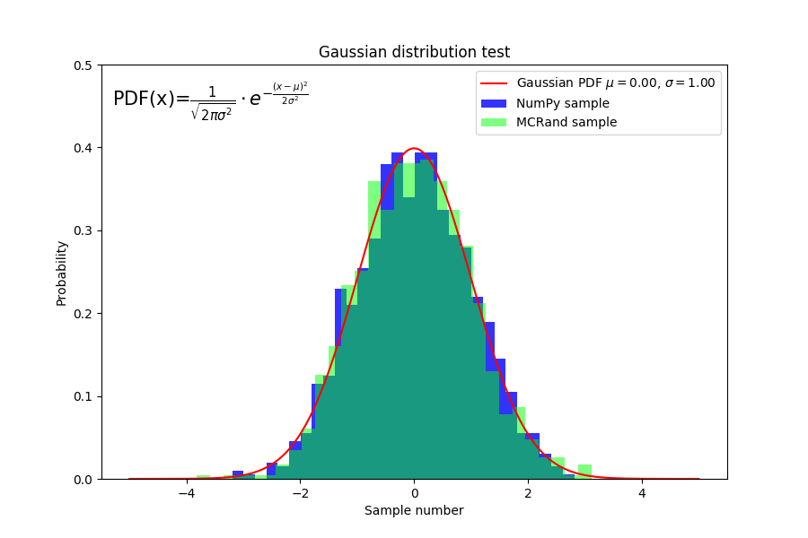
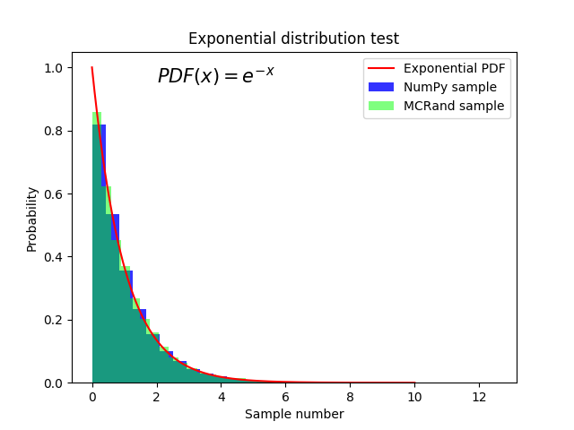
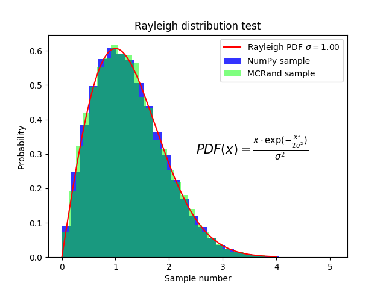
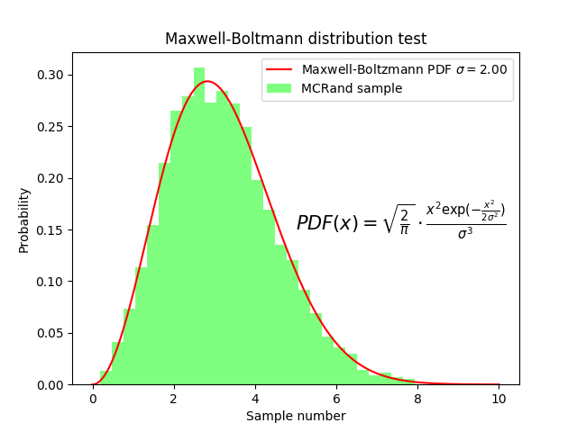
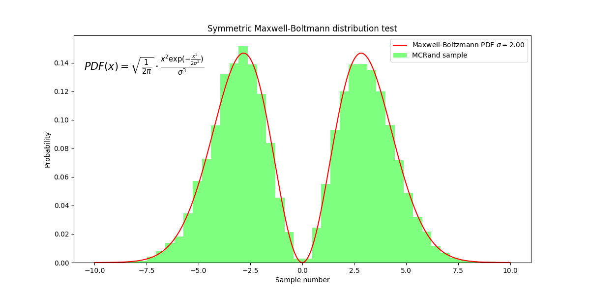
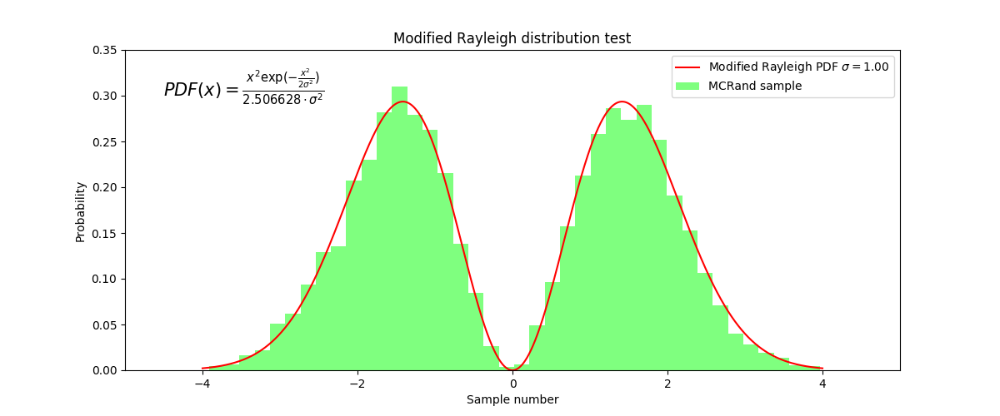

Samples¶
Random Number Generator¶
Here you can find a comparison between MCRand and Numpy for different probability distributions. Moreover, we use the program to generate random samples drawn from non-standard distributions.
To use the MCRand library to generate random numbers we first need to import the random generator (RandGen). This step can be done in the following way
from mcrand import sample
Gaussian distribution¶
To generate gaussian distributed numbers with the MCRand random generator we first need to define the Gaussian PDF
def gaussian(x, mu, sigma):
return (1/(np.sqrt(2*np.pi*sigma**2))) * np.exp(-(x-mu)**2/(2*sigma**2))
Then, MCRand can be used to generate N gaussian numbers from x0 to xf as follows
x0 = -5
xf = 5
N = 1000
sigma = 1
mu = 0
gaussian_sample = sample(gaussian, x0, xf, N, mu, sigma)
Finally to plot the histogram and the PDF we can use matplotlib.pyplot
import matplotlib.pyplot as plt
plt.hist(gaussian_sample, bins=30, density=True, color=(0,1,0,0.5), label='MCRand sample')
plt.plot(x, gaussian(x, mu, sigma), color='r', label=r'Gaussian PDF $\mu=%.2f$, $\sigma=%.2f$' % (mu,sigma))

Cauchy distribution¶
To generate a Cauchy distribution we need to define its PDF
def cauchy(x, x0, gamma):
return 1 / (np.pi * gamma * (1 + ((x-x0)/(gamma))**2))
and then use the random number generator of MCRand as before
x0 = -10
xf = 10
N = 10**5
x0_cauchy = 0
gamma = 1
cauchy_sample = sample(gaussian, x0, xf, N, mu, sigma)
Finally we plot the histogram and the PDF
plt.hist(cauchy_sample, bins=50, density=True, color=(0,1,0,0.5), label='MCRand sample')
plt.plot(x, cauchy(x, x0_cauchy, gamma), color='r', label=r'Cauchy PDF $\gamma=%.2f$, $x_0=%.2f$' % (gamma, x0_cauchy))

From now on, we’ll just write some code along with the output figures.
Exponential distribution¶
def exponential(x):
return np.exp(-x)
x0 = 0
xf = 10
N = 10**5
rand = sample(exponential, x0, xf, N)
plt.hist(numpy_rand, bins=30, density=True, color=(0,0,1,0.8), label='NumPy sample')
plt.hist(rand, bins=30, density=True, color=(0,1,0,0.5), label='MCRand sample')

Rayleigh distribution¶
def rayleigh(x, sigma):
return (x*np.exp(-(x**2)/(2*sigma**2))) / (sigma**2)
x0 = 0
xf = 4
sigma = 1
N = 10**5
rand = sample(rayleigh, x0, xf, N, sigma)
plt.hist(rand, bins=30, density=True, color=(0,1,0,0.5), label='MCRand sample')
plt.plot(x, rayleigh(x, sigma), color='r', label=r'Rayleigh PDF $\sigma=%.2f$' % sigma)

Maxwell-Boltzmann distribution¶
def maxwell_boltzmann(x, sigma):
return (np.sqrt(2/np.pi))*(x**2*np.exp(-(x**2)/(2*sigma**2))) / (sigma**3)
x0 = 0
xf = 10
sigma = 2
N = 10**5
rand = sample(maxwell_boltzmann, x0, xf, N, sigma)
plt.hist(rand, bins=30, density=True, color=(0,1,0,0.5), label='MCRand sample')
plt.plot(x, maxwell_boltzmann(x, sigma), color='r', label=r'Maxwell-Boltzmann PDF $\sigma=%.2f$' % sigma)

Symmetric Maxwell-Boltzmann distribution¶
def symmetric_maxwell_boltzmann(x, sigma):
return 0.5*(np.sqrt(2/np.pi))*(x**2*np.exp(-(x**2)/(2*sigma**2))) / (sigma**3)
x0 = -10
xf = 10
sigma = 2
N = 10**5
rand = sample(symmetric_maxwell_boltzmann, x0, xf, N, sigma)
plt.hist(rand, bins=40, density=True, color=(0,1,0,0.5), label='MCRand sample')
plt.plot(x, symmetric_maxwell_boltzmann(x, sigma), color='r', label=r'Maxwell-Boltzmann PDF $\sigma=%.2f$' % sigma)

Modified Rayleigh distribution¶
Finally we consider a invented probability distribution, given by the Rayleigh distribution multiplied by x. In some way we making a symmetric Rayleigh distribution. Then, this new distribution must be normalized, so the following equation must be acomplished:
By nummeric integration it turns out that the normalization constant must be C=1/2.506628. Then we get the probability density function for this distribution.
Therefore, MCRand can be used to generate random numbers distributed following this distribution as follows
def invented(x, sigma):
return (x**2*np.exp(-(x**2)/(2*sigma**2))) / (2.506628*sigma**2)
x0 = -4
xf = 4
sigma = 1
N = 10**5
rand = sample(invented, x0, xf, N, sigma)
plt.hist(rand, bins=40, density=True, color=(0,1,0,0.5), label='MCRand sample')
plt.plot(x, invented(x, sigma), color='r', label=r'Modified Rayleigh PDF $\sigma=%.2f$' % sigma)

Multidimensional Integration¶
To use the MCRand library to perform multidimensional integrals we first need to import the Integrate module. This step can be done in the following way
from mcrand import uniform_sampling
Then, we must define the function to integrate in an NumPy ndarray supported way, so it must be defined generally. For instance let’s imagine we want so solve the following integral:
Then we should define the function as
def func(x):
return np.sum(np.power(x, 2))
so each element of the x array will represent a variable.
Finally, to get the result with its error we can run the following code
x0 = [0, 0]
xf = [2, 3]
N = 10**6
result = uniform_sampling(func, x0, xf, N)
print(result)
The result is given in the following format
(25.99767534344232, 0.02023068196284685)